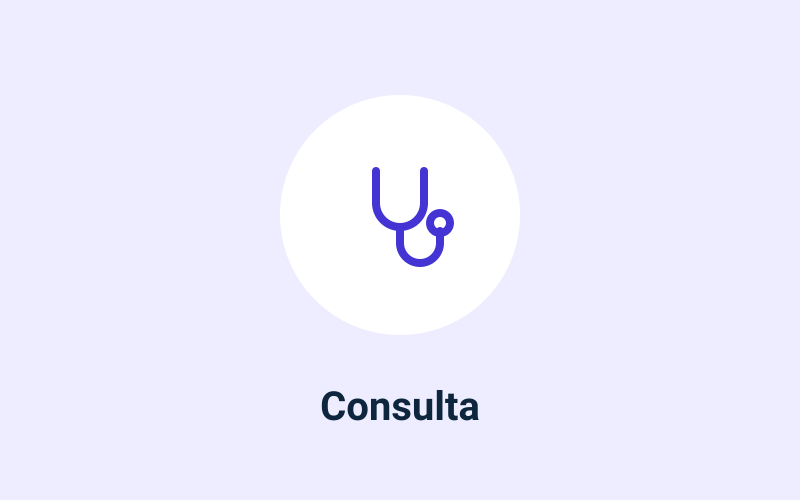
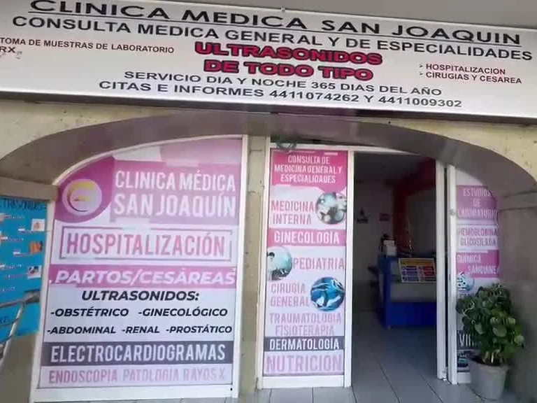
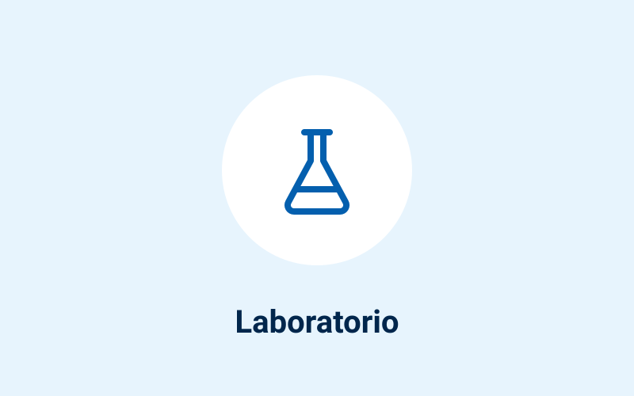
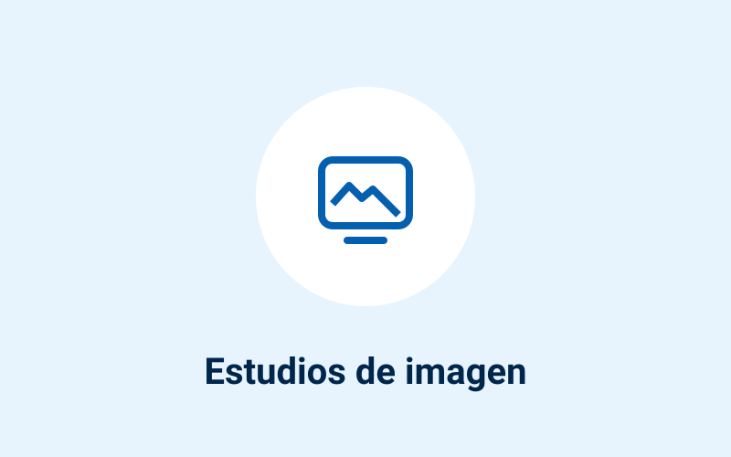
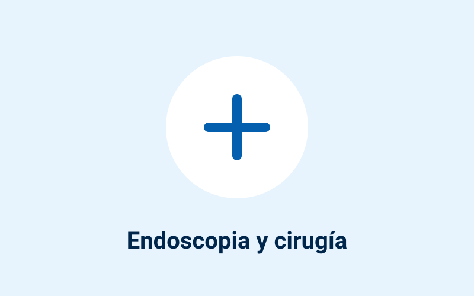

Consulta general y de especialidades
Consulta médica a cualquier hora, consulta de especialidades y aplicación de suero.
Agendar Consulta general y de especialidadesVista previa para Clínica San Joaquín: lo marcado «Por confirmar» y los espacios de fotos se completan con sus datos
Consulta general y especialidades · Tequisquiapan y Cadereyta
Servicio las 24 horas. Consulta general y de especialidades, laboratorio, ultrasonido, rayos X, endoscopia y cirugías, con los mismos servicios en sus dos sucursales.


Consulta médica a cualquier hora, consulta de especialidades y aplicación de suero.
Agendar Consulta general y de especialidades
Análisis clínicos y estudios de patología en la misma clínica.
Agendar Laboratorio y patología
Ultrasonido, radiografías (rayos X) y electrocardiograma.
Agendar Estudios de imagen
Endoscopia y cirugías, con valoración previa en consulta.
Agendar Endoscopia y cirugíasLos mismos servicios en las dos; elija la que le quede más cerca.
Médico responsable de la sucursal Tequisquiapan
Médico responsable de la sucursal Cadereyta
Agende su consulta por WhatsApp; le confirman la hora y la sucursal.
Escriba el nombre del paciente y el día que le acomoda; le confirmamos la hora. Horario: Todos los días, 24 horas.
En una urgencia no espere respuesta por WhatsApp: llame al 911 o acuda al hospital más cercano.